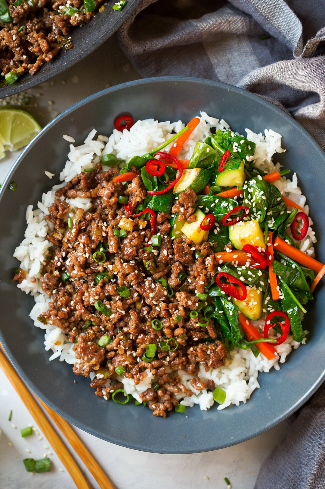

Homepage
Lasagna
Korean Beef Bowl
Korean Beef Bowl

Description:
Korean beef bowl looks great on the adverts, but is even better in person. Let's learn to make a korean beef bowl and melt those taste buds!
Ingredients:
- 1 pound lean ground beef
- 5 cloves garlic, crushed
- 1 tablespoon freshly grated ginger
- 2 teaspoons toasted sesame oil
- ½ cup reduced-sodium soy sauce
- ⅓ cup light brown sugar
- ¼ teaspoon crushed red pepper
- 6 green onions, chopped, divided
- 4 cups hot cooked brown rice
- 1 tablespoon toasted sesame seeds
Steps
- Heat a large skillet over medium-high heat. Add beef and cook, stirring and crumbling into small pieces until browned, 5 to 7 minutes. Drain excess grease.
- Stir in garlic, ginger, and sesame oil and cook until fragrant, about 2 minutes. Stir in soy sauce, brown sugar, and red pepper. Cook until beef absorbs some sauce, about 7 minutes. Add 1/2 of chopped green onions.
- Serve over hot cooked rice; garnish with sesame seeds and remaining green onions.